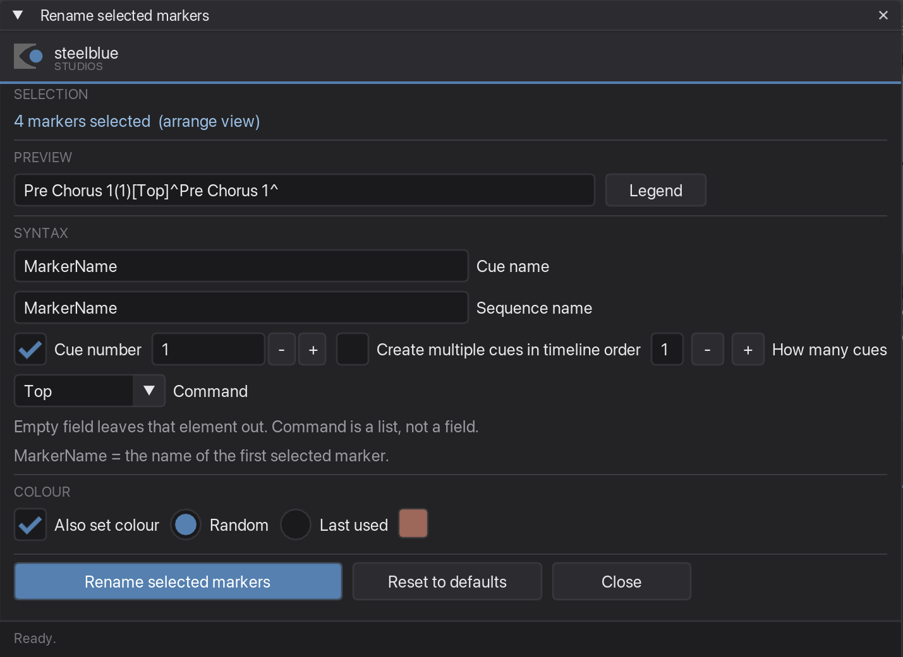
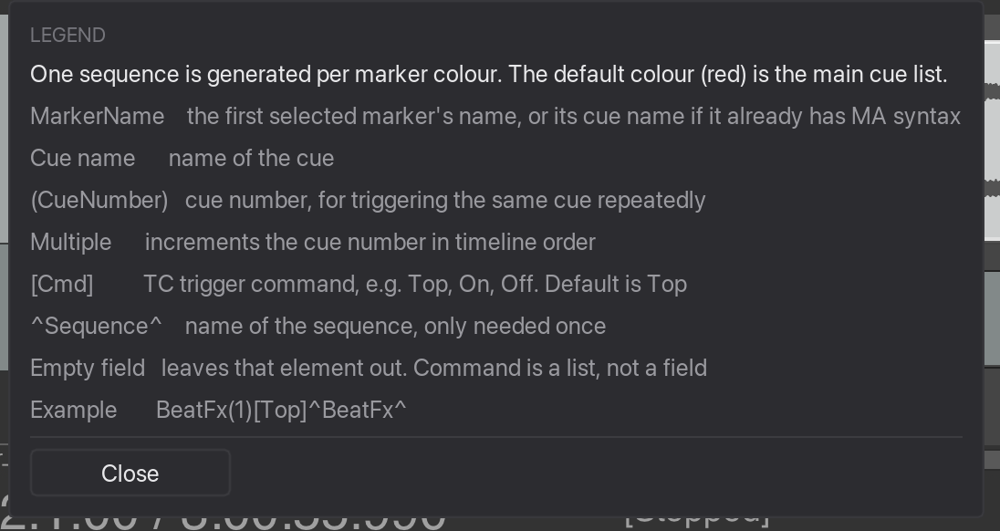
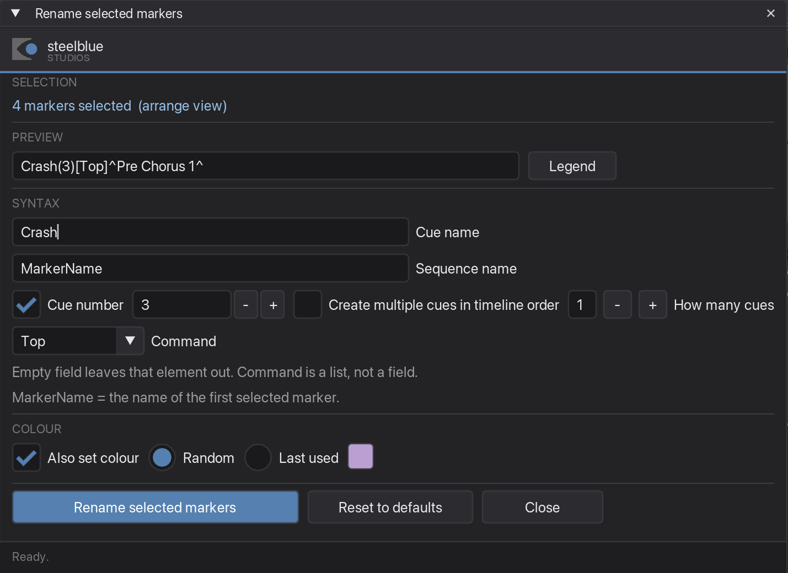

Rename selected markers
Builds MA-Tools cue names for a whole set of markers at once, from parts you switch on and off — instead of typing BeatFx(1)[Top]^BeatFx^ forty times by hand.
What it is for
Your markers arrive from somewhere — you dropped them by ear, or the MIDI plugin created them. Now they need to become cues the timecode trigger understands. This window assembles the syntax for you and applies it to every selected marker in one go, with a live preview so you see the result before you commit.
Step by step
-
Select the markers, then click into the arrange
Pick the markers in the Region/Marker Manager. Then click once in the arrange view.
Do not skip that click if you start the plugin from a shortcut. While the Region/Marker Manager has keyboard focus it eats the shortcut — the window will not open, and your selection gets cleared on top of it. One click in the arrange and the shortcut works. Your selection stays; only its highlight fades while the manager is inactive.
The workspace tab has no such problem: it is already open, so there is no shortcut to swallow.
-
Build the name
Open the Rename selected markers tab, or run the plugin in its own window. Every field you touch changes the preview at the top immediately, and the preview shows what the first selected marker will be called.

Preview at the top, Legend beside it, then the fields. If the markers already carry MA-Tools syntax, the fields are filled in from the first one when the window opens. Running the plugin twice therefore cannot wrap a name inside itself:
Kick(1)[Top]^Kick^staysKick(1)[Top]^Kick^and does not becomeKick(1)[Top]^Kick^(1)[Top]^…^. -
Press Legend when a field is unclear
The Legend button next to the preview explains every part of the syntax, one line each. In the single window it opens as a small popup under the button; in the workspace it takes over the tab until you press Close — a docker is not tall enough for a popup that size.

The same eight lines in both windows. -
Know what
MarkerNamedoesMarkerNamein the cue name field is not a literal name — it is a placeholder for whatever the marker is already called. Leave it there and a marker called verse becomesverse(1)[Top]^verse^, while drop becomesdrop(1)[Top]^drop^. Each marker keeps its own name inside the new syntax.Type an actual word instead — say
Crash— and every selected marker gets that same name.On a marker that already has MA-Tools syntax,
MarkerNameresolves to its cue name, not to the whole string. That is what keeps a second run from nesting the syntax. -
Number repeated cues
Cue number switches the number on, and the
-and+buttons beside the field step it by one.Switch on Create multiple cues in timeline order when the same cue is fired several times. How many cues sets how far the counter runs before it starts over.

Four markers selected, the counter set to 3. 
The counter wraps: 1, 2, 3 — and the fourth marker starts again at 1. That wrap is the point of the setting: six markers with the counter at five give you
1 2 3 4 5 1, not1 2 3 4 5 6. -
Decide about the colour
Also set colour is on, and colours every marker in the run the same. Random picks one fresh colour for this run; Last used takes the one from the previous run, so a second block joins the same sequence. The swatch beside the two shows which colour a run would use.
Untick it and the marker colours are left exactly as they are.
-
Rename
Click Rename selected markers. The status line reports how many were changed. Marker positions stay exactly as they were, the markers keep their ruler lane, and the colours only change if you asked for it.
Reset to defaults puts every field and switch back to the state the window opens in.
The syntax, part by part
| Part | What it does |
|---|---|
MarkerName | Placeholder for the marker's existing name — or for its cue name, if it already carries MA-Tools syntax |
| Cue name | The name of the cue |
(CueNumber) | Cue number — for triggering the same cue repeatedly |
| Multiple | Counts the cue number up in timeline order, and wraps |
[Cmd] | TC trigger command. A list, not a field: Go, Top, Flash. Default is Top |
^Sequence^ | Name of the sequence. Only needs to be given once |
| Empty field | Leaves that element out of the name entirely |
A marker that already carries some other command keeps it: it turns up as a fourth entry in the list and stays selected until you pick one of the three.
One sequence per marker colour. Colour is how you split cue lists: the default colour (red) is the main cue list, and every other colour generates its own sequence. That is what Also set colour is for — colour the block in the same run that names it.
Good to know
Order comes from the manager, not from the timeline
The counter follows the order the markers appear in the Region/Marker Manager's list. Sort that list the way you want them numbered before you rename.
This one really does need JS_ReaScriptAPI
Without that extension the plugin cannot read the manager's list and falls back to plain timeline order — so the numbering can come out different from what you expect, without any warning. If you only install one extension besides ReaImGui, make it this one.